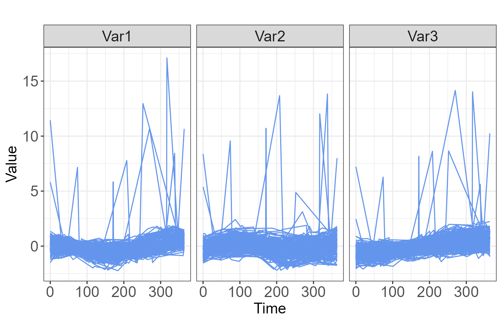

Clustering Multivariate Longitudinal Data using Tensor Product Smoothing Splines
demo.Rmd1. Introduction
Electronic health records (EHR) provide a wealth of patient information with repeated measures of multiple lab values over time. Such longitudinal datasets have become increasingly common as medical records are computerized, offering opportunities in clinical research to examine biomarkers as they change over time rather than at one single timepoint. A common approach to analyzing these trajectories of lab values is to identify subgroups of patients with similar characteristics, and to further assess association between group membership and future outcomes (Aghabozorgi, Shirkhorshidi, and Wah 2015; Nylund-Gibson, Grimm, and Masyn 2019). Two general methods are often employed to classify trajectories: latent trajectory methods such as growth mixture modeling (GMM) and group-based trajectory modeling (GBTM) (Nest et al. 2020), and unsupervised machine learning methods such as k-means clustering. While there have been extensive applications where longitudinal data is grouped based on the trajectory of a single biomarker, there are fewer studies that focus on grouping multivariate trajectory data.
Latent trajectory methods assume an underlying latent grouping
variable such as “severity of disease” that is manifest in the observed
variables. The posterior probability of class membership is estimated
for each individual using maximum likelihood methods. GMM estimates a
mean growth curve for each class and represents individual variation
using random effects (Muthen and Muthen
2000). The package lcmm (Proust-Lima et al. 2022) in R ( Core Team 2017) can be used to estimate growth
mixture models with various extensions, including the
multlcmm() function for multivariate trajectories. GBTM, on
the other hand, does not use random effects to capture individual
differences and assumes equal variance across all time and classes (Herle et al. 2020). The lcmm
package can also be used for GBTM, as well as PROC TRAJ Jones and Nagin (2007)] in SAS ( Institute Inc. 2016). A multivariate extension
has also been developed for PROC TRAJ. These methods provide a valuable
tool, but they require distributional assumptions and can have high
computational costs (particularly GMMs) and potential convergence
issues, especially when applied to large datasets or datasets with
outliers (Den Teuling, Pauws, and Heuvel
2020).
Clustering methods have also been used extensively to classify
trajectory data. These algorithms, such as k-means, k-medoids, and
hierarchical clustering, have a lower computational cost compared to
methods such as GMM, but they require that data be measured at the same
time points for each individual. This feature is rarely found in
clinical datasets, so a pre-processing step is sometimes implemented,
where trajectories are estimated using splines, and the clustering
algorithms are applied to spline basis coefficients or fitted spline
values Abraham et al. (2003); D’Urso et al. (2021)]. Smoothing splines offer
the additional advantage of noise and data reduction. A number of
multivariate clustering methods have been proposed, including clustering
on p-values from hypothesis tests for the difference between
autoregressive parameter estimates (Maharaj
1999), using principal components analysis to calculate a degree
of similarity , and wavelet analysis (D’Urso and
Maharaj 2012). A number of R packages have been developed to
cluster trajectory data. The package traj (Sylvestre et al. 2006; Leffondree et al. 2004)
implements a stepwise method where 24 change indices are computed to
assess different aspects of the longitudinal pattern, then a principal
components analysis is used to determine the most important features,
and lastly k-means clustering in conducted on the change indices. The
kml R package (Genolini et al.
2015) utilizes k-means clustering on trajectory data with
imputation methods available for missing data. It has been extended with
the kml3d package (Genolini et al.
2015), which clusters based on two trajectories. A recent paper
comparing traj, kml, and lcmm
found that kml showed the best clustering accuracy, cluster
separation, and stability (Verboon and Pat El
2022). This indicates that non-model-based methods such as
k-means have the potential to work as well or better than more complex
and computationally costly methods such as GMM.
The TPSClus package utilizes non-model-based methods to
efficiently identify clusters in datasets with three or more trajectory
variables of interest, with the efficiency to handle large datasets such
as those sometimes found containing EHR data. Rather than imputing
missing data, the method fits smoothing splines to the trajectories of
each individual. In order to account for the likely correlation between
these variables, multidimensional tensor product splines are used,
implemented using a generalized additive model (GAM) in R package
mgcv (S. N. Wood 2011, 2003).
The user then has the option of conducting fuzzy c-medoids clustering on
either the spline basis coefficients or the fitted values at
user-defined points. In addition, there is an option for the inclusion
of a noise cluster for outliers. The fuzzy clustering is implemented
using R package fclust [Ferraro,
Giordani, and Serafini (2019)}, and it yields a degree of cluster
membership for each individual. The clusters can then be used as
predictors in a generalized linear model (GLM) for a distal outcome if
desired. The package offers numerous plot functions, and the ability to
predict cluster membership and distal outcomes for new datasets.
In section 2, we examine the data structure and provide a review of
tensor product splines. In section 3, we review fuzzy clustering methods
and detail methodology for the inclusion of fuzzy clusters as predictors
in GLMs. In section 4, we provide an overview of the package
TPSClus, demonstrating the primary functions and features.
Section 5 concludes and summarizes.
2. Smoothing multivariate longitudinal data
In most clinical databases where measurements are taken over time, it is rare that all individuals are measured at the same time points or with the same frequency. As a result, a pre-processing step must be implemented prior to applying a partitional clustering algorithm such as k-mean, k-medoids, or hierarchical clustering. One common approach is the use of smoothing splines (Abraham et al. 2003; D’Urso et al. 2021; Iorio et al. 2016), which have the added benefit of reducing measurement error and noise . In the case where there are multiple trajectories of interest, we can incorporate the correlation between those trajectories into the smoothing process by using multidimensional tensor product smoothing splines.
2.1 Data structure
A multivariate time series can be structured as a three-dimensional array in the form subjects \(\times\) variables \(\times\) times (D’Urso, De Giovanni, and Massari 2018; D’Urso 2000). The trajectories for a single individual \(\mathbf{Y}_{i}=\{y_{izt}:z=1 \dots Z; t=1 \dots T_{i}\}\), where \(Z\) is the number of variables and \(T_i\) is the number of observations for subject \(i\), can be plotted as a plane in Cartesian three-space, as seen in Figure 1.
The instantaneous, or cross-sectional dissimilarity between two trajectories measured at the same timepoints \(\mathbf{Y}_i\) and \(\mathbf{Y}_{i'}\) can be defined using the squared Euclidean distance: \[{}_{1}d_{ii'}^{2}= \sum_{t = 1}^{T} \| \mathbf{y}_{it} - \mathbf{y}_{i't} \|^2.\] This distance does not, however, take into account the longitudinal nature of the data. One simple approach that allows us to capture information about the intervals between timepoints is to define \(\mathbf{v}_{it} = \mathbf{y}_{it} - \mathbf{y}_{i(t-1)}\) as the variation, or slope, of trajectory \(\mathbf{Y}_i\) in the interval \([t-1,t]\). Then a longitudinal dissimilarity measure between \(\mathbf{Y}_i\) and \(\mathbf{Y}_{i'}\) can be defined as: \[{}_{2}d_{ii'}^{2}= \sum_{t = 1}^{T} \| \mathbf{y}_{it} - \mathbf{y}_{i't} \|^2 + \sum_{t = 2}^{T} \| \mathbf{v}_{it} - \mathbf{v}_{i't} \|^2.\] A mixed approach can then be used to simultaneously consider both the cross-sectional and longitudinal features, where the dissimilarity is given by: \[d_{ii'}^{2}= \sum_{t = 1}^{T} \| \mathbf{y}_{it} - \mathbf{y}_{i't} \|^2 + \sum_{t = 2}^{T} \| \mathbf{v}_{it} - \mathbf{v}_{i't} \|^2.\]
2.2 Tensor product splines
In order to smooth multiple trajectories simultaneously, tensor
product splines can be fit using a GAM. The basic approach, described in
detail by (S. N. Wood 2017; Simon N. Wood
2006), is to begin with marginal smooths of the covariates of
interest, in this case the variable and the time. A tensor product is
then used to create a smooth of multiple variables from these marginal
smooths. Here we have two covariates (variable and time), \(z\) and \(t\). A low-rank base can be chosen for
each, representing the smooth function of each covariate, \(f_z\) and \(f_t\): \[f_{z}(z)= \sum_{j=1}^{J} \alpha_j a_j(z)
\quad\mathrm{and}\quad
f_{t}(t)= \sum_{k=1}^{K} \alpha_k a_k(t)\] where \(\alpha_j\) and \(\delta_k\) are parameters, \(a_{j}(z)\) and \(d_{k}(t)\) are the basis functions, and
\(J\) and \(K\) are the corresponding number of basis
functions. If we then allow the parameters of \(f_z\) to vary smoothly with \(t\), \(f_z\) can be converted into a function of
\(z\) and \(t\). We use the basis for \(t\) to get: \[\alpha_{j}(t)= \sum_{k=1}^{K} \delta_(jk)
d_{k}(t)\] and it then follows that \[f_{zt}(z,t)= \sum_{j=1}^{J} \alpha_j a_{j}(z) =
\sum_{j=1}^{J} \sum_{k=1}^{K} \delta_{jk} d_{k}(t)a_{j}(z).\] The
set of observations of \(z\) and \(t\) has model matrices for the marginal
smooths, \(\mathbf{X}_z\) and \(\mathbf{X}_t\). The model matrix \(\mathbf{X}\), which maps parameters \(\delta_{jk}\) (arranged into a vector \(\delta\)) to the evaluated function \(f_{zt}(z,t)\) at \(z\) and \(t\), can be calculated using a Kronecker
product of these model matrices for the marginal smooths. The \(i\)-th row of \(\mathbf{X}\) is given by: \[\mathbf{X}_{i}= \mathbf{X}_{zi} \otimes
\mathbf{X}_{ti}\] In order to smooth this tensor product basis,
the roughness is also measured using marginal smooth functions, with the
assumption that each has an associated function that measures the
roughness of the function and can be expressed as a quadratic form in
the marginal parameters. Here, we use cubic spline penalties are used as
the marginal penalties, so the roughness of \(f_{zt}\) can be measured as: \[\begin{equation}
J(f_{zt})= \int_{z,t} \left[ \lambda_{z} \left(
\frac{\delta^{2}f}{\delta z^2} \right) ^2 + \lambda_t \left(
\frac{\delta^{2}f}{\delta t^2} \right) ^2 \right] \mathrm{d}z
\mathrm{d}t (\#eq:rough)
\end{equation}\] where \(\lambda_{\cdot}\) are smoothing parameters
that control the tradeoff in roughness in different directions and allow
the penalty to be independent of the scaling of the variables. The
coefficients and smoothing parameters of this tensor product smooth are
estimated in a GAM using R package mgcv.
3. Fuzzy clustering of time series
After the multiple time series have been smoothed, a clustering algorithm can be applied. One option is to cluster on the spline coefficients as in D’Urso et al. (2021) and D’Urso, De Giovanni, and Vitale (2022). Alternatively, clustering can be conducted on fitted values at the spline knots or other chosen timepoints, as well as the slopes between points, with the distance defined as in section 2.1. If the primary interest is in the shape of the trajectory, the shape can be isolated by centering on the individual means of each trajectory as in (Heggeseth and Jewell 2018). These clusters allow the identification of individuals with similar characteristics, and cluster membership might subsequently be used as a prognostic variable in a GLM for a distal outcome.
3.1 Fuzzy clustering algorithm
The k-means algorithm partitions objects into \(k\) clusters so that each object is placed into the cluster with the nearest mean, usually measured by the squared Euclidean distance. The number of clusters \(k\) is pre-specified, and the algorithm is iterative, with means recalculated for each cluster at each step, until within-cluster variance is minimized (Hastie, Tibshirani, and Friedman 2009). The k-medoids clustering algorithm, also called the partitioning around medoids (PAM) approach, is similar to the k-means algorithm, except that it uses observed values within the data as the centers, or medoids, of each cluster. This method has been shown to be more robust to outliers than the k-means algorithm (Arora, Deepali, and Varshney 2016; Kaufman and Rousseeuw 2009).
K-means and k-medoids algorithms provide “crisp” partitions where individuals are assigned to exactly one cluster. Fuzzy c-means (Bezdek 2013) and fuzzy c-medoids (Krishnapuram et al. 2001) clustering methods have been developed as “fuzzy” counterparts, where an individual’s membership degree is calculated for each cluster. Fuzzy clustering offers an advantage in real applications when there are not clear boundaries between clusters (Alonso et al. 2021), and it provides additional information regarding the certainty of the cluster assignments (Everitt 2011), while still being computationally efficient.
If \(\mathbf{X}={\mathbf{x}_i |i=1, \dots ,n}\) is a set of values for \(n\) subjects, we can let \(\mathbf{V}={\mathbf{v}_1, \mathbf{v}_2, \dots , \mathbf{v}_c}\) be the set of cluster means or cluster medoids, where the \(\mathbf{x}_i\) and \(\mathbf{v}_j\) are scalar for univariate data and mathbfors for multivariate data and \(c\) is the number of clusters. In fuzzy c-medoids clustering, \(\mathbf{V}\) will be a subset of size \(c\) of \(\mathbf{X}\). Then the fuzzy c-means or fuzzy c-medoids algorithm will minimize \[\begin{equation} \mathop{\arg \min}\limits_{\mathbf{V}}= \sum_{i=1}^{n} \sum_{j=1}^{c} u_{ij}^{m} \|\mathbf{x}_{i} - \mathbf{v}_j \|^{2}. \end{equation}\]
In this objective function, \(u_{ij}\) represents the degree of membership of \(\mathbf{x}_i\) in cluster \(j\), and is most often defined by:
\[\begin{equation}
u_{ij}= \frac{1}{\sum_{k=1}^{c} \left( \frac{\|\mathbf{x}_{i} -
\mathbf{v}_j \|}{\|\mathbf{x}_{i} - \mathbf{v}_k \|}
\right)^{\frac{2}{m-1}}}
\end{equation}\] where \(m\) is
the “fuzziness” parameter, \(m \in
[1,\infty)\). Higher values of m indicate a higher fuzziness,
where individuals are more likely to belong to more clusters. There is
not a widely accepted optimal value for \(m\), but it is related to the number and
separation of clusters in the dataset (Huang et
al. 2012). As \(m \to 1_{+}\),
the fuzzy clustering algorithm reduces to a hard clustering algorithm,
and as \(m\) increases, clusters blend
together. In 2019, Zhou and Yang (2019)
published an experimental study where they found that the optimal value
for most datasets is \(m = 1.2\), and
this is the default value used in the TPSClus clustering
functions.
A number of strategies have been introduced to reduce the influence of outliers in the clustering process. One method is the introduction of an artificial \((c+1)\)-th cluster, called a noise cluster, for the outlying values. Individuals with a distance greater than \(\delta\) from the medoids are classified into the noise cluster. The distance \(\delta\) is generally chosen so that it is the average distance between individuals and cluster means, but it may be pre-specified to control the number of individuals classified as outliers. If a noise cluster is included, the equation for \(u_{ij}\) is replaced by: \[\begin{equation} u_{ij}= \frac{\left[ \frac{1}{|\mathbf{x}_{i} - \mathbf{v}_k \|^2} \right] ^{\frac{1}{m-1}}}{\sum_{k=1}^{c} \left[ \frac{1}{\|\mathbf{x}_{i} - \mathbf{v}_k \|} \right]^{\frac{1}{m-1}} + \left[ \frac{1}{\delta^2} \right]^{\frac{1}{m-1}}} \end{equation}\]
and the degree of membership in the noise cluster is \[\begin{equation} u_{i(j+1)}= \frac{\left[ \frac{1}{\delta^2} \right] ^{\frac{1}{m-1}}}{\sum_{k=1}^{c} \left[ \frac{1}{\|\mathbf{x}_{i} - \mathbf{v}_k \|} \right]^{\frac{1}{m-1}} + \left[ \frac{1}{\delta^2} \right]^{\frac{1}{m-1}}} \end{equation}\]
The clustering algorithm is implemented using R package
fclust (Ferraro, Giordani, and
Serafini 2019).
3.2 Including clusters as predictors in a statistical model
After identifying clusters of individuals with similar characteristics, there is often an interest in examining the association between cluster assignment and an outcome of interest. A straightforward approach is to construct a GLM using the modal cluster assignment as a categorical variable. Such an approach, however, assumes that cluster assignment is certain, which is most often not the case. Fuzzy clustering, however, provides additional information in the degree of cluster membership. This information can be incorporated into a GLM to account for the clustering uncertainty using the partial assignment method, where c - 1 dummy variables for cluster membership are used, but the degree of cluster membership is inserted into the model for each of these variables rather than a zero or one (Lythgoe, Garcia-Fiñana, and Cox 2019). Additional covariates can also be included in the model.
4. The TPSClus package
The TPSClus package was designed to implement the
three-step methodology described in sections 2 and 3. The
TPSfit() function fits tensor product splines to
multivariate longitudinal data. The cluster.fitted() and
cluster.coefs() functions apply fuzzy c-medoids clustering
to the smoothed data. The FKM.glm() function fits a GLM
where cluster assignment is an independent variable, incorporated using
the partial assignment method. The package requires R packages
mgcv, fclust, dplyr,
tidyr, as well as ggplot2 if graphics are
produced.
4.1 Fitting tensor product splines in TPSClus
For a simple illustration of the functionality of the
TPSClus package, we use a simulated time series dataset
containing three variables collected over a period of one year. The
dataset is structured in long format, with a subject ID variable, a time
variable, three variables measured at each time point, two fixed
covariates, and a binary outcome variable.
library("TPSClus")
data("TS.sim")
head(TS.sim)
#> SubjectID Time Var1 Var2 Var3 x1 x2 outcome
#> 1 17 0 4.5 10.0 5.7 0 27.9 1
#> 2 17 7 5.6 10.6 5.9 0 27.9 1
#> 3 17 35 7.0 10.1 3.9 0 27.9 1
#> 4 17 73 7.3 9.9 4.4 0 27.9 1
#> 5 17 79 7.1 12.8 5.9 0 27.9 1
#> 6 17 80 5.5 11.0 6.1 0 27.9 1The TPSfit() function fits tensor product splines on
three or more variables with repeated measures, in this case
Var1, Var2, and Var3. The splines
are fitted using the gam() function in package
mgcv with a cubic spline basis. For the time variable, the
user may choose to either specify the location of the knots, or specify
the number of knots, which will then be spaced evenly across the total
time period. It is necessary that all individuals be measured over
roughly the same time period, and that each individual has an adequate
number of observations to support the chosen number of knots. As
TPSfit() runs , it will produce a warning message for any
individuals who were unable to be fit by a spline with the given number
of knots, and a list of these subjects is included in the output. For a
simple fit using 5 knots for the time variable, we can run
fitsplines1 <- TPSfit(TS.sim, vars=c("Var1", "Var2", "Var3"), time="Time", ID="SubjectID", kt=5)
print(fitsplines1)
#> Object of type 'TPSfit'
#>
#> Tensor-product splines fit for 150 out of 150 subjects
#> Variables of interest: Var1 Var2 Var3
#> Time knots: 0 91 182 273 364
#> Output: GAMscoef contains model coefficients
#> Output: GAMsfitted has fitted values at times: 0 91 182 273 364
#>
#> Available components:
#> [1] "GAMsfitted" "GAMscoef" "fit_times" "vars"
#> [5] "data_long" "knots" "indiv_means" "GAMs"
#> [9] "nsubjects" "ID" "IDmatch" "error_subjects"
#> [13] "call"Splines were fit for all of the 150 subjects. The
GAMsfitted dataset contains fitted spline values at the
knots, and the GAMScoef dataset contains the spline
coefficients. By default, the function standardizes each of the
variables in order to equalize the multivariate data RN283.
For each individual, the mean of each trajectory is also produced, along
with values centered on the individual mean. These can be seen in the
GAMsfitted dataset:
head(fitsplines1$GAMsfitted)
#> Id2 SubjectID FitTime Variable x t mean_x centered_x
#> 1 1 17 0 1 -0.7351913 1 -0.11890952 -0.61628180
#> 2 1 17 0 2 -0.4458700 1 -0.05598468 -0.38988534
#> 3 1 17 0 3 -0.2976551 1 -0.17464892 -0.12300614
#> 4 1 17 91 1 -0.3394761 2 -0.11890952 -0.22056654
#> 5 1 17 91 2 -0.1960867 2 -0.05598468 -0.14010198
#> 6 1 17 91 3 -0.2530180 2 -0.17464892 -0.07836904As a default, the fitted values are calculated at the knots, but
alternate fitted values can be specified with the fit_times
option. Additional fitted values might yield better clustering results,
but will also slow down the clustering algorithm.
fitsplines2 <- TPSfit(TS.sim, vars=c("Var1", "Var2", "Var3"),
time="Time", ID="SubjectID", knots_time=c(0, 91, 182, 273, 365),
fit_times=c(46, 91, 137, 182, 228, 273, 319))
print(fitsplines2)
#> Object of type 'TPSfit'
#>
#> Tensor-product splines fit for 150 out of 150 subjects
#> Variables of interest: Var1 Var2 Var3
#> Time knots: 0 91 182 273 365
#> Output: GAMscoef contains model coefficients
#> Output: GAMsfitted has fitted values at times: 46 91 137 182 228 273 319
#>
#> Available components:
#> [1] "GAMsfitted" "GAMscoef" "fit_times" "vars"
#> [5] "data_long" "knots" "indiv_means" "GAMs"
#> [9] "nsubjects" "ID" "IDmatch" "error_subjects"
#> [13] "call"The TPSfit() function produces an object of class
'TPSfit' that can then be input into the
cluster.fitted() or cluster.coef() function to
conduct fuzzy clustering on the fitted tensor product splines.
4.2 Fuzzy clustering in TPSClus
After fitting the splines, we implement the fuzzy clustering
algorithm. A noise cluster is optional and is frequently needed for
robustness to outliers. We can examine our data for outliers using the
plot function for the 'TPSfit' object
outputted in the first step, and in this case we look at the
standardized raw data as shown in Figure 2.
plot(fitsplines2, type="raw")
Due to the observation of several outlying trajectories, we will
leave the default noise = TRUE option. We start by
clustering on the spline coefficients and k = 2 clusters
and 10 random starts.
ccoefs_2 <- cluster.coefs(fitsplines2, k=2, RS=10, seed=1234)
ccoefs_2$FKM_indices
#> PC PE MPC SIL SIL.F XB
#> 0.6795184 0.2448186 0.3590367 0.2246924 0.2483164 0.8582490The cluster validity indices allow for a comparison between multiple
clusterings and are helpful in the determination of the correct number
of clusters. Two commonly applied indices for fuzzy clustering are the
Fuzzy Silhouette index, here labeled as SIL.F (Campello and Hruschka 2006) and the Xie-Beni
index, labeled XB (Xie and Beni
1991). The maximum value of the Fuzzy Silhouette and the minimum
value of the Xie-Beni index are used to identify the optimal number of
clusters.
ccoefs_3 <- cluster.coefs(fitsplines2, k=3, RS=10, seed=1234)
ccoefs_4 <- cluster.coefs(fitsplines2, k=4, RS=10, seed=1234)
ccoefs_5 <- cluster.coefs(fitsplines2, k=5, RS=10, seed=1234)
compare <- rbind(ccoefs_2$FKM_indices, ccoefs_3$FKM_indices, ccoefs_4$FKM_indices, ccoefs_5$FKM_indices)
row.names(compare) <- c("k=2", "k=3", "k=4", "k=5")
compare[,5:6]
#> SIL.F XB
#> k=2 0.2483164 0.8582490
#> k=3 0.3359611 0.4794297
#> k=4 0.3210678 0.8333409
#> k=5 0.2684423 1.1316547According to the Fuzzy Silhouette and Xie-Beni indices, the optimal number of clusters for this dataset is three.
An alternate method for clustering is to cluster based on the fitted spline values and the slopes between those values. We can apply this using three clusters for comparison.
cfit_3 <- cluster.fitted(fitsplines2, k=3, RS=10, seed=1234)
compare2 <- rbind(ccoefs_3$FKM_indices, cfit_3$FKM_indices)
row.names(compare2) <- c("coefficients", "fitted values")
compare2[,5:6]
#> SIL.F XB
#> coefficients 0.3359611 0.4794297
#> fitted values 0.4814252 0.4135123Clustering on the fitted values appears to improve the clustering
results. Note that we used the default values for the
cluster.fitted() function of addslopes = TRUE
(includes the slope between points in addition to the cross-sectional
values at each point), center = TRUE (centers each
trajectory on the individual mean), and m = 1.2. The full
details of the clustering results can be viewed using the
summary function.
summary(cfit_3)
#> cluster.fitted(TPSdata = fitsplines2, k = 3, seed = 1234, RS = 10)
#>
#> 150 subjects clustered into 3 clusters + noise cluster using m = 1.2
#> Clusters based on fitted values at times 46 91 137 182 228 273 319
#> and slopes between points
#>
#> Cluster summary:
#> Cl.size Min.degree Max.degree Mean.degree
#> Clus1 49 0.303 1.000 0.965
#> Clus2 50 0.788 1.000 0.993
#> Clus3 46 0.977 1.000 0.999
#> Noise 5 0.439 0.995 0.830
#>
#> Component 'FKM_TPS' contains the fuzzy clustering details from package 'fclust'.
#> Components of 'FKM_TPS':
#> [1] "U" "H" "F" "clus" "medoid" "value"
#> [7] "criterion" "iter" "k" "m" "ent" "b"
#> [13] "vp" "delta" "stand" "Xca" "X" "D"
#> [19] "call"
#>
#> Cluster validity indices:
#> PC PE MPC SIL SIL.F XB
#> 0.94952330 0.04157604 0.92428495 0.46242525 0.48142523 0.41351228
#>
#> Output dataset 'FKM_TPS_U' contains degree of cluster membership and modal
#> cluster assignment for each object.
#> Head of dataset 'FKM_TPS_U':
#> Id2 SubjectID Clus1 Clus2 Clus3 Noise ClusModal
#> 1 1 17 4.739759e-08 1.000000e+00 2.668276e-11 4.322098e-13 2
#> 2 2 19 3.017424e-05 9.380437e-06 9.999604e-01 5.364980e-08 3
#> 3 3 34 1.025170e-08 1.000000e+00 1.407161e-12 1.454392e-14 2
#> 4 4 52 4.097481e-08 1.000000e+00 9.080800e-12 1.292300e-13 2
#> 5 5 55 1.633734e-05 5.442627e-06 9.999782e-01 2.370104e-08 3
#> 6 6 83 2.273020e-04 4.444262e-05 9.997262e-01 2.035284e-06 3A number of graphics are available, including a plot showing the mean trajectory for each cluster, as well as spaghetti plots which may be overlaid or displayed in a grid format.
plot(cfit_3, type="mean", legend_label_size=12)
#> `geom_smooth()` using method = 'gam' and formula 'y ~ s(x, bs = "cs")'
plot(cfit_3, type="raw_grid", axis_label_size=12, strip_label_size=12)The output dataset FKM_TPS_U contains the degree of
cluster assignment for each individual, as well as the modal cluster
assignment.
4.3 Fitting a GLM with fuzzy clusters as predictors in TPSClus
It is often of interest to examine the association between cluster
assignment and an outcome of interest. While using the modal cluster
assignment as an independent variable is fairly straightforward,
TPSClus provides a function for adding clusters into a GLM
using the partial assignment method described in section 3.2. The
function FKM.glm() uses the output object from
cluster.coefs() or cluster_fitted() along with
the original dataset containing an outcome variable of interest. It
retains the full functionality of the glm() function,
including the options for different family and link functions and offset
variables. Any number of fixed covariates may also be included as
independent variables in the model, in addition to the cluster
assignment. In the TS.sim dataset, we have two covariates,
x1 and x2, and a binary outcome variable. Therefore, we fit a logistic
model using the clusters identified previously, with cluster 1 as the
default reference cluster.
model <- FKM.glm(cfit_3, TS.sim, y="outcome", covariates=c("x1", "x2"), family="binomial")
summary(model)
#> Full model:
#> Formula (f1): outcome ~ Clus2 + Clus3 + Noise + x1 + x2
#> Family: binomial
#>
#> Call:
#> glm(formula = f1, family = family, data = data3)
#>
#> Deviance Residuals:
#> Min 1Q Median 3Q Max
#> -1.97354 -0.24706 -0.02364 0.15876 2.10229
#>
#> Coefficients:
#> Estimate Std. Error z value Pr(>|z|)
#> (Intercept) 10.16346 2.04052 4.981 6.33e-07 ***
#> Clus2 0.98968 0.83743 1.182 0.2373
#> Clus3 2.22895 0.96709 2.305 0.0212 *
#> Noise 2.98192 2.15768 1.382 0.1670
#> x1 0.81151 0.67257 1.207 0.2276
#> x2 -0.26979 0.05146 -5.242 1.58e-07 ***
#> ---
#> Signif. codes: 0 '***' 0.001 '**' 0.01 '*' 0.05 '.' 0.1 ' ' 1
#>
#> (Dispersion parameter for binomial family taken to be 1)
#>
#> Null deviance: 201.065 on 149 degrees of freedom
#> Residual deviance: 65.561 on 144 degrees of freedom
#> AIC: 77.561
#>
#> Number of Fisher Scoring iterations: 7
#>
#>
#> ANOVA chi-square p-value for significance of clusters in model:
#> 0.07274037We can see that assignment to cluster 3 is statistically significant in comparison to cluster 1 assignment. Overall, the p-value for the inclusion of clusters in the model is about 0.07.
4.4 Making predictions about new data in TPSClus
After clusters have been identified in a dataset or a model has been
developed utilizing those clusters as predictor variables, there is
often an interest in predicting the cluster assignment or outcome for a
new set of individuals. The predict functions in
TPSClus allow for both. In order to predict the cluster
assignment and degrees of cluster membership, we use the
predict function for the class 'FKM.TPS' of an
object output from cluster.coefs() or
cluster_fitted(), along with the new set of data. In this
case, we use the simulated dataset TS.sim.new, which
contains data for 30 new subjects.
cfit_pred <- predict(cfit_3, TS.sim.new)
summary(cfit_pred)
#> Object of type 'FKM.predicted'
#> predict.FKM.TPS(object = cfit_3, newdata = TS.sim.new)
#>
#> Tensor-product splines fit for 30 out of 30 subjects
#>
#> Degree of membership calculated based on clusters from input 'FKM.TPS' object.
#> 30 subjects clustered into 3 clusters + noise cluster
#>
#> Clusters based on fitted values at times 46 91 137 182 228 273 319
#> and slopes between points
#>
#> Cluster summary for new data:
#> Cl.size Min.degree Max.degree Mean.degree
#> Clus1 12 0.576 1 0.941
#> Clus2 10 0.909 1 0.991
#> Clus3 8 0.960 1 0.988
#>
#> Output dataset 'predicted_U' contains degree of cluster membership and modal
#> cluster assignment for each object.
#> Head of dataset 'predicted_U':
#> Id2 SubjectID Clus1 Clus2 Clus3 Noise ClusModal
#> 1 1 1626 5.894418e-09 0.9999999941 2.651672e-12 3.830269e-14 2
#> 2 2 1627 1.173724e-03 0.0003101768 9.985158e-01 3.041344e-07 3
#> 3 3 1629 2.177904e-02 0.0115980191 9.666197e-01 3.292821e-06 3
#> 4 4 1634 1.184537e-10 0.9999999999 2.314156e-14 2.220446e-16 2
#> 5 5 1641 7.284988e-01 0.2613819696 6.649319e-03 3.469900e-03 1
#> 6 6 1650 2.956685e-13 1.0000000000 6.299418e-17 0.000000e+00 2If we wish to predict an outcome for new patients based on the
previously developed model, we may use the prediction function with the
'FKM.glm' class object output from the
FKM.glm() function, along with the new dataset. It is not
necessary to predict the cluster assignments first.
pred_outcome <- predict(model, TS.sim.new)
head(pred_outcome)
#> SubjectID x1 x2 Id2 Clus1 Clus2 Clus3 Noise
#> 1 1626 0 23.5 1 5.894418e-09 0.9999999941 2.651672e-12 3.830269e-14
#> 2 1627 0 87.2 2 1.173724e-03 0.0003101768 9.985158e-01 3.041344e-07
#> 3 1629 0 59.3 3 2.177904e-02 0.0115980191 9.666197e-01 3.292821e-06
#> 4 1634 0 36.3 4 1.184537e-10 0.9999999999 2.314156e-14 2.220446e-16
#> 5 1641 1 49.6 5 7.284988e-01 0.2613819696 6.649319e-03 3.469900e-03
#> 6 1650 0 34.1 6 2.956685e-13 1.0000000000 6.299418e-17 0.000000e+00
#> ClusModal predicted
#> 1 2 9.919424e-01
#> 2 3 1.457288e-05
#> 3 3 2.486555e-02
#> 4 2 7.957166e-01
#> 5 1 1.069007e-01
#> 6 2 8.758032e-01
summary(pred_outcome$predicted)
#> Min. 1st Qu. Median Mean 3rd Qu. Max.
#> 0.000000 0.001644 0.274358 0.409432 0.833822 0.999997The predicted value in the output dataset is the predicted probability of the binary outcome. The mean value of the predicted probability is about 0.41.
5. Summary and discussion
The TPSClus package provides a methodology for
multivariate fuzzy clustering of longitudinal data. The package provides
multiple plots to enable visualization of the clustered data. Cluster
assignment may be used as a predictor in a GLM while taking the
uncertainty of cluster assignment into account. In additional the
package provides options for predicting cluster assignment and outcomes
for new data.
Many of the limitations of TPSClus are those inherent in
all clustering algorithms. The methods identify clusters based entirely
on trajectory shapes, but in reality, these clusters are a construct for
simplicity of interpretation and are not well-defined in a real EHR
dataset. The determination of the optimal number of clusters remains an
unsettled issue. In this package, we provide several indices and plots
to help make the decision on the number of clusters to use, but the
indices often disagree on the optimal number of clusters, and there is
no index that is widely accepted as being the most reliable.
There are few packages in R that allow for clustering trajectories on
multiple variables simultaneously. The TPSClus methodology
is non-parametric, avoiding issues with assumptions about trajectory
shape and computational cost associated with GMM models. In addition,
the package offers options for robustness to outliers and for including
the clusters into GLMs as independent variables. It also provides
valuable visualization tools.
A number of topics need further investigation. As mentioned before, identifying the optimal number of clusters is an important unresolved issue. There are also many methods that have been presented in the literature for clustering multivariate trajectory data, but little research that compares these methods.
The TPSClus package provides a method for identifying
clusters based on multiple trajectories in longitudinal data. The
non-parametric fuzzy c-medoids algorithm is particularly useful in large
datasets with outliers, such as EHR databases, where other methods can
suffer from convergence issues and high computational cost. The tools
offered in this package provide researchers with a valuable tool for the
analysis of this increasingly common data format.